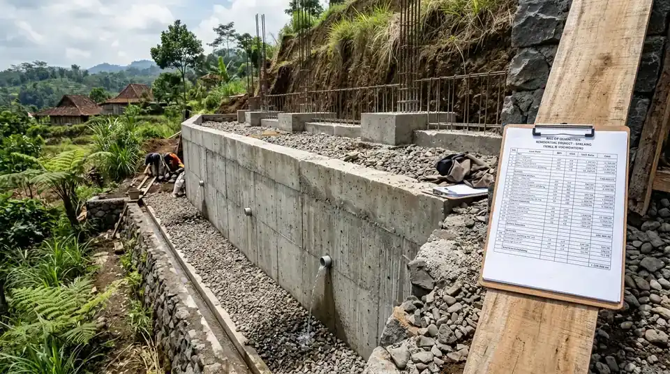

Ringkasan Inti
- Arsitek lahan kontur memulai proses dengan survei topografi untuk memetakan kebutuhan struktur tambahan.
- RAB lahan kontur mencakup pos anggaran khusus seperti cut and fill dan retaining wall.
- Kontinjensi yang dialokasikan umumnya lebih besar dibanding proyek pada lahan datar biasa.
- Koordinasi dengan konsultan struktur menjadi bagian penting dalam penyusunan RAB yang akurat.
Daftar Isi Artikel
Arsitek lahan kontur Malang menyusun RAB untuk tanah miring dengan merinci biaya survei, cut and fill, retaining wall, dan kontinjensi yang lebih besar dibanding lahan datar.
Bagaimana Arsitek Lahan Kontur Menyusun RAB yang Akurat?
Arsitek lahan kontur Malang menyusun RAB yang akurat melalui proses bertahap yang dimulai dari survei kondisi lahan hingga penyusunan estimasi biaya detail untuk setiap komponen pekerjaan yang dibutuhkan.
Tahapan penyusunan RAB yang umum dilakukan:
- Melakukan survei topografi untuk memahami tingkat kemiringan dan karakteristik tanah di lokasi proyek.
- Berkoordinasi dengan konsultan struktur untuk menentukan kebutuhan retaining wall dan pondasi khusus.
- Menghitung volume pekerjaan cut and fill berdasarkan data survei yang telah dikumpulkan.
- Menyusun estimasi biaya material dan tenaga kerja untuk setiap tahapan pekerjaan lahan kontur.
- Menambahkan kontinjensi yang lebih besar dibanding proyek lahan datar untuk mengantisipasi temuan tak terduga di lapangan.

Apa Perbedaan RAB Lahan Kontur dengan Lahan Datar?
RAB lahan kontur memiliki perbedaan signifikan dibanding lahan datar, terutama pada komponen pekerjaan tanah dan struktur penahan yang tidak ditemukan pada proyek konvensional.
Perbedaan utama yang perlu diperhatikan:
- Lahan datar umumnya hanya membutuhkan pekerjaan galian pondasi standar, sementara lahan kontur memerlukan cut and fill yang lebih kompleks.
- RAB lahan kontur perlu mengakomodasi biaya retaining wall sebagai struktur penahan tanah tambahan yang signifikan.
- Sistem drainase pada lahan kontur membutuhkan perencanaan lebih detail dibanding lahan datar yang relatif lebih sederhana.
- Waktu pengerjaan pada lahan kontur umumnya lebih panjang, sehingga biaya tenaga kerja juga perlu disesuaikan.
Catatan Arsitek Malang
Jangan pernah menyusun RAB rumah tanah miring hanya berdasarkan perkiraan visual tanpa survei topografi kontur dan uji sondir tanah. Kesalahan estimasi volume cut and fill serta elevasi retaining wall adalah sumber pembengkakan anggaran paling sering pada pembangunan villa dan hunian lereng di wilayah Malang dan Batu.
Apa Saja Pos Anggaran Khusus yang Perlu Diperhatikan untuk Lahan Kontur?
Beberapa pos anggaran khusus perlu mendapat perhatian lebih dalam penyusunan RAB lahan kontur, mengingat kompleksitas pekerjaan yang berbeda dari proyek pada lahan datar.
Pos anggaran khusus yang perlu diperhatikan:
- Biaya survei topografi dan analisis geoteknik untuk memahami karakteristik tanah secara mendalam.
- Biaya retaining wall yang disesuaikan dengan tingkat kemiringan dan kondisi tanah spesifik lahan.
- Biaya sistem drainase tambahan untuk mengelola aliran air permukaan pada lahan berkontur.
- Biaya mobilisasi alat berat yang mungkin lebih tinggi apabila akses menuju lokasi proyek terbatas.
Bagaimana Arsitek Memastikan RAB Lahan Kontur Tetap Realistis?
Arsitek lahan kontur memastikan RAB tetap realistis melalui pendekatan konservatif dalam mengestimasi biaya, mengingat kompleksitas dan ketidakpastian yang lebih tinggi pada proyek lahan berkontur.
Pendekatan yang diterapkan untuk menjaga RAB tetap realistis:
- Melakukan survei yang menyeluruh sebelum menyusun estimasi biaya, menghindari asumsi tanpa data lapangan yang akurat.
- Berkonsultasi dengan kontraktor berpengalaman menangani lahan berkontur untuk validasi estimasi biaya pekerjaan tanah.
- Menyediakan opsi alternatif desain yang dapat menyesuaikan anggaran apabila hasil survei menunjukkan kompleksitas lebih tinggi dari perkiraan awal.
Arsitek lahan kontur Malang menyusun RAB untuk rumah di tanah miring melalui proses survei yang mendalam dan perhitungan pos anggaran khusus seperti cut and fill dan retaining wall. Melibatkan arsitek berpengalaman sejak tahap awal membantu memastikan RAB yang disusun realistis dan mengurangi risiko pembengkakan biaya di tengah proyek.
FAQ Seputar RAB Rumah Lahan Kontur Malang
Berapa persen tambahan kontinjensi yang disarankan untuk RAB lahan kontur?
Kontinjensi untuk lahan kontur umumnya disarankan lebih besar dibanding lahan datar, dengan besaran yang perlu disesuaikan berdasarkan tingkat kompleksitas kontur spesifik lahan.
Apakah semua arsitek bisa menyusun RAB untuk lahan kontur?
Tidak semua arsitek memiliki pengalaman khusus menangani lahan berkontur, sehingga disarankan memilih arsitek dengan portofolio proyek serupa.
Apakah survei topografi selalu diperlukan sebelum menyusun RAB lahan kontur?
Survei topografi sangat disarankan sebelum menyusun RAB lahan kontur agar estimasi biaya yang dihasilkan lebih akurat dan sesuai kondisi aktual lahan.
Konsultasikan RAB & Desain Rumah Lahan Kontur Anda
Dapatkan perhitungan RAB akurat, simulasi cut and fill optimal, serta desain arsitektur split-level berlisensi IAI Malang.

Naura Regyna Putri
Penulis & Tim Riset Arsitektur Maroon Arsitek Malang, spesialis perencanaan anggaran konstruksi (RAB), arsitektur lahan lereng berkontur, dan pengurusan PBG/SIMBG.